Stony Brook University Mobile App Developers
There are two native options for Android developemnt. First is the Android SDK which uses the Java language. The second is the Android NDK which uses C++. This series of tutorials will be using the Java SDK
In this tutorial I will demonstrate how to setup an Android Development Enviroment on your machine, produce a Hello World App and demonstrate how to use the LogCat
In these tutorials we will be using the Eclipse ADT as our IDE. It is cross platform and comes prepackaged for easy installation. Also note we will be using Eclipse ADT Version 22.3 with Android SDK Version 4.4 Please ensure you are using the same version, otherwise you may experience complications.
Move zip to where you wish to store this application then unzip. I just use the Applications folder on my Mac
Its usually very standard when learning a new language or technology to do the hello world app. So lets get started.
Create a new Android Application
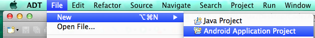
Give it a name and a package name. This is also the dialog where you decided what versions of Android we will be developing for. The convention is to target for the latest but have a minimum for API 8. However, this might change to API 16-7 soon as most Android 2.2 and 3.2 devices have been replaced by or upgraded to Icecream Sandwhich(4.0) or later.
Continue following uses the default settings, keep pressing next until you are finished. This will produce for you an application that produces a displayed string saying Hello World
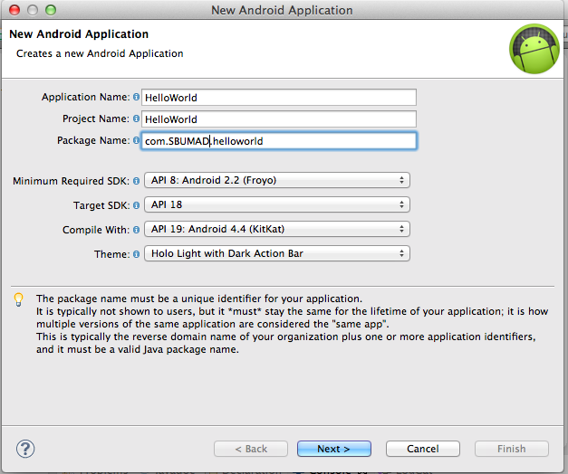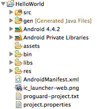
So you have built your first android app. Congrats....trouble is you probably have no idea what all of this is and thus don't feel very accomplished. That is okay, ill help fill you in on what each folder entails.
src: There is where you will be putting the majority of your new classes. Like a normal Java project
gen: This is where the complied Android java objects will go. DO NOT TOUCH. You can look at R.java for member fields but DO NOT CHANGE ANYTHING
Android: The Android jar is here...you know the thing that makes it an android app. Just dont touch it
Android Private Libraries: same as Android but external libraries
assets:Assets provide a way to include arbitrary files like text, xml, fonts, music, and video in your application. If you try to include these files as "resources", Android will process them into its resource system and you will not be able to get the raw data. If you want to access data untouched, Assets are one way to do it.
bin: It is similiar to a regular bin folder for a Java project. The app .apk is stored here if you want to email an installable copy. Otherwise, just leave it alone.
libs: There is where you will put all of your own external JAR files
res: res is short for resources as in Images, audio, videos and etc. This folder also stores the layouts which we will talk about later
AndroidManifest.xml:The manifest is like the big settings file. It says what version of android this needs, what is the default activity, what permissions this app needs and lots of other important stuff we will talk about another time
ic_launcher-web.png:its a copy of the Application icon
proguard-project.txt:if you want to use ProGuard you use this file
project.properties:a generated settings file leave it alone
Just click on the little green arrow to make eclipse run your program. The first time it will prompt you will this. Make sure to run as an Android Application.
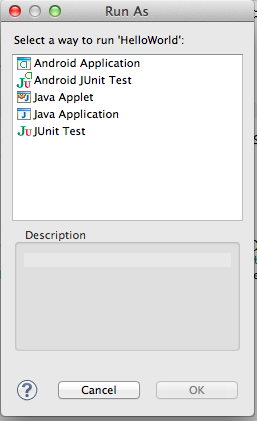I recommend developing on a physical device versuses using the emulator.
The physical device has more functionality than an emulation.
Less demanding on your developing machine and the AVD is very difficult to configure for speed. I know I have struggled to build a quick but stable configuration on my macbook air.
Just cuts out a middle man.
However, if you dont have an android device, then emulation is your best option. When you first boot up your android device it is going to take a long time to boot. However, this is just for configuration purposes. Please let it just run its course. However, if it takes longer than 10 minutes, then something has gone wrong and I recommend terminating the process and adjusting your settings.
otherwise you may experience complications.
Unlike iPhones, Androids have many diffrent manufactors with custom roms on top of that. Thus they don't have a universal way to enable debugging. However, the convention is that you need to:
Go into your settings menu and see if you can't find something like that. Worse come to worse, just google "How to develop on #{your model}" For example: Link to enable developer options on the Samsung Galaxy S4
Once it is ready for development you need to make sure you have the USB drivers installed for your device. Then just plug it in and click on Run. You should get a prompt to run on your device. if not and you are asked to run it on a Virtual Device just change the configurations to this setting
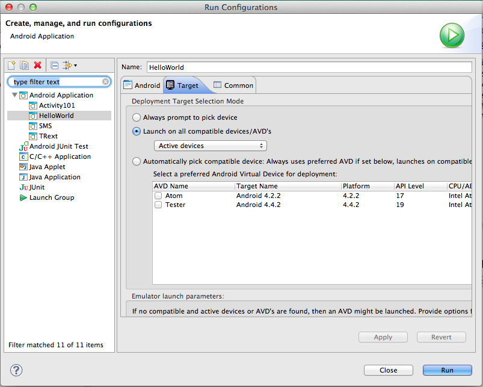Click on Window -> Android Virtual Device Manager.
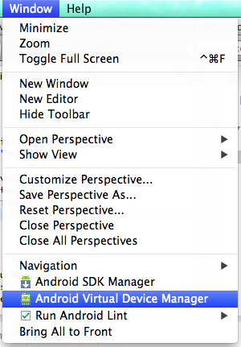Then click on New and then use these basic settings
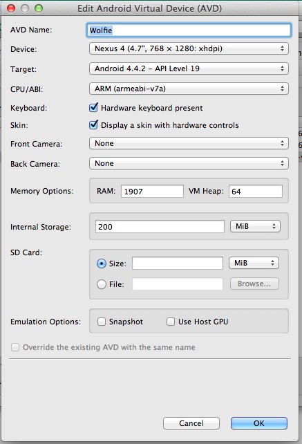I've heard that the atom(x86) image will run better on intel based computers but I have yet to be able to build a stable one. So I just use the default ARM architecture.
Now click on start and bring your monster to life. It may take a while. Please be patient, you are only emulating an entire physical device in virtual space.
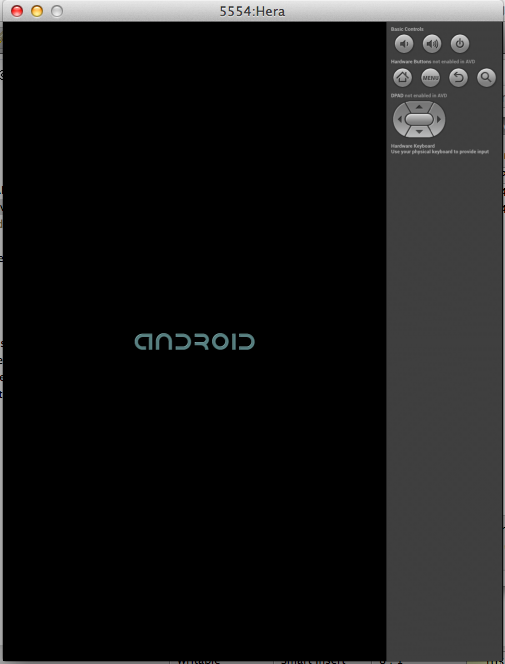Last thing is that we need to set your new virtual machine as the default enviroment you want to run your applications.
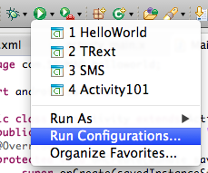 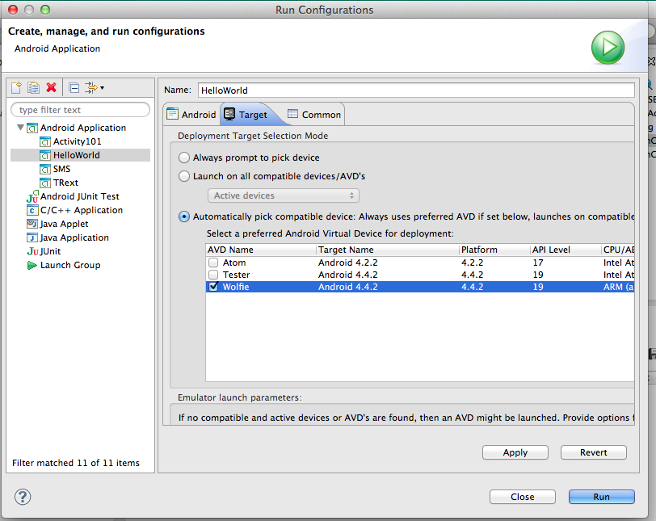You should now see something like this on your screen. if not, click run again.
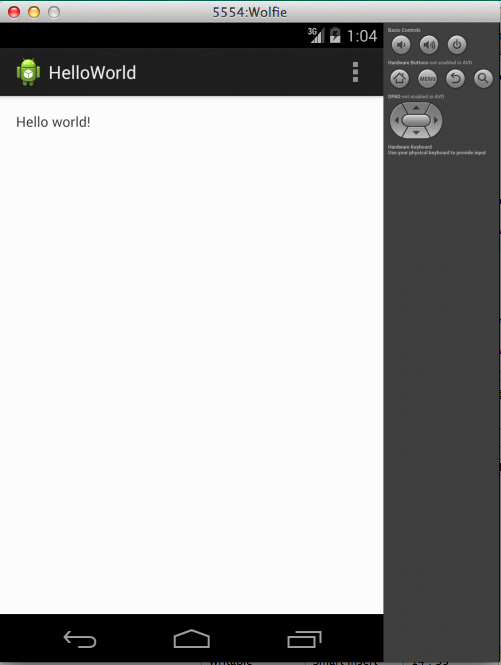Now Android provides you a builtin method to produce logs and there are 5 types of log statements: ERROR, WARN, INFO, DEBUG, VERBOSE. For development feel free to use all of them but in production you should only print errors, warnings and debugging logs.
So lets try out print some Logs. Go to Src->com.SBUMAD.helloworld and open up MainActivity.java
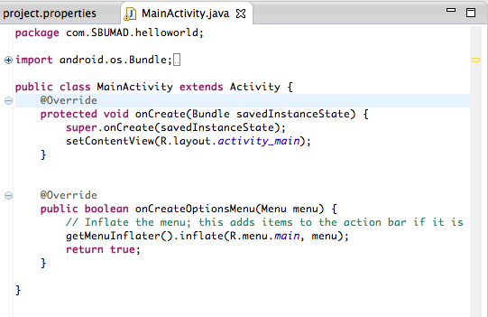
Now under OnCreate append
Log.i("MyApp", "Info: Use me to spit out basic infomation like ensuring a function is being called");
Log.e("MyApp", "Error: Use me to print out throw errors");
Log.d("MyApp", "Debug: Use to spit out debugging info");
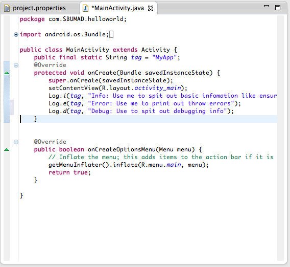
Now click run again. The program should recompile and be installed then ran on your device. then open up the LogCat
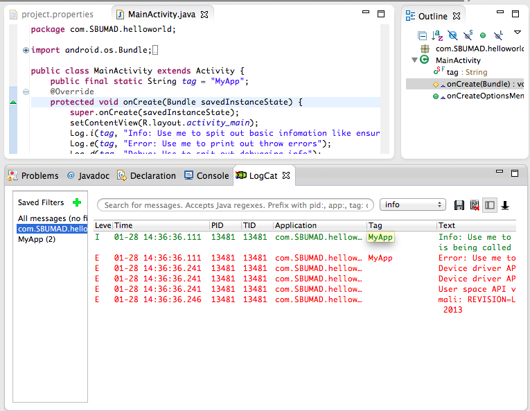If you click on the filter com.SBUMAD.helloworld it will only display logs from your application
The logs can be filtered further if you click on the little green arrow and make more costum ones. They can be filtered by Level, Time, Process ID, Application, Tag and even Text content
Try importing some of your old Java programs like a sorting algorithm and testing out the LogCat.
Check out these other tutorials